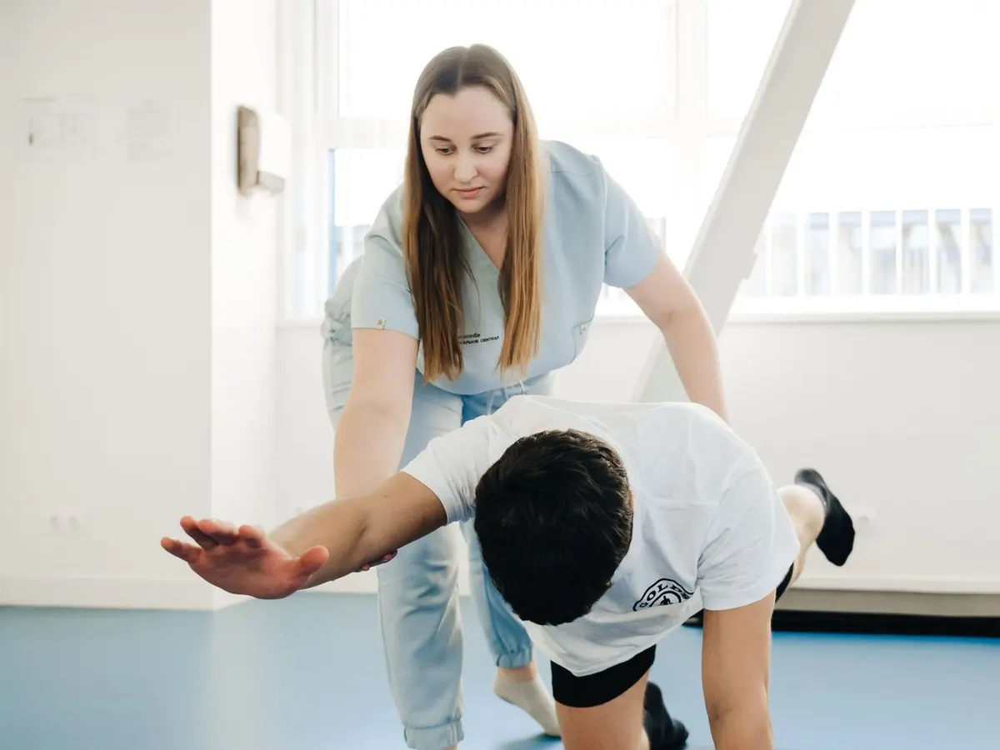
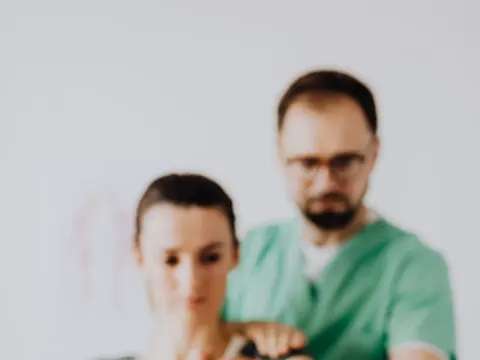
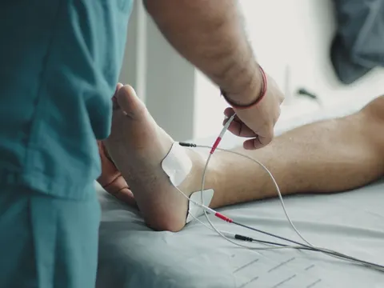
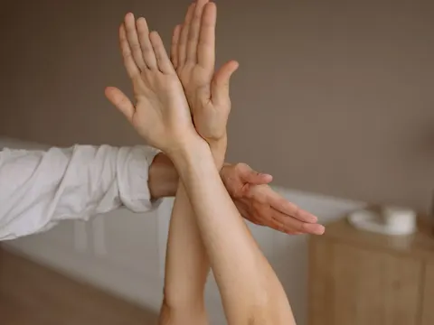

リハビリテーション
痛みをやわらげ、毎日の動きを取り戻すことを目指すリハビリです。

ABOUT
一人ひとりに合わせたリハビリ
医師の診察で痛みの原因を確かめたうえで、理学療法士 6 名が担当します。体のかたさや筋力、ふだんの生活や仕事・スポーツの動きを一緒に確認しながら、無理のない運動を組み立てます。
ご自宅でできる運動もお伝えして、通院のない日も続けられるようにしています。
MENU
リハビリの種類

運動療法
ストレッチや筋力をつける運動で、関節の動きと体の支えを取り戻すことを目指します。

物理療法
温熱や電気、牽引などの機器を使い、痛みやこわばりの緩和を図ります。

徒手療法
理学療法士が手で関節や筋肉を動かし、体の動きを整えます。
ROOM
リハビリ室
写真を押すと大きく表示します。
リハビリを受けるには
- まず医師の診察を受けてください。リハビリが必要かどうかを医師が判断します。
- 2 回目からは時間予約制です。Web かお電話でご予約ください。
- 保険が使えます（交通事故・労災の方も受けられます）。
- 動きやすい服装でお越しください。